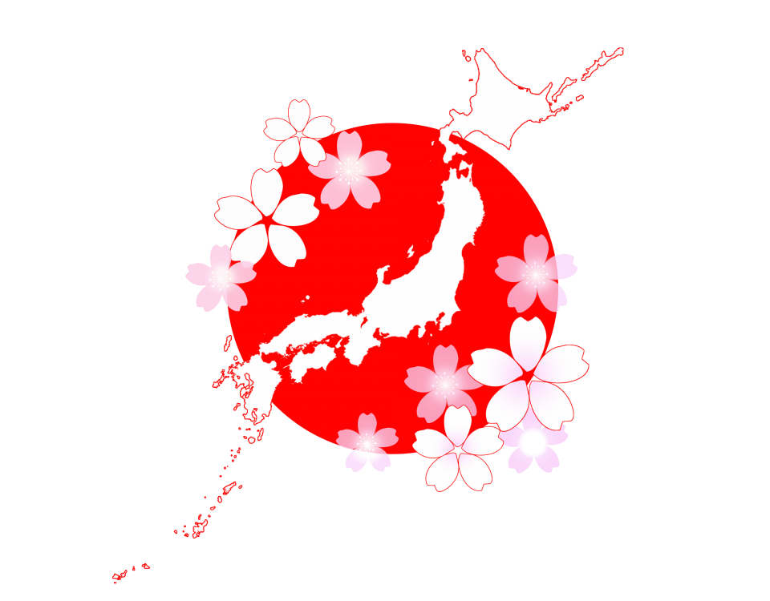
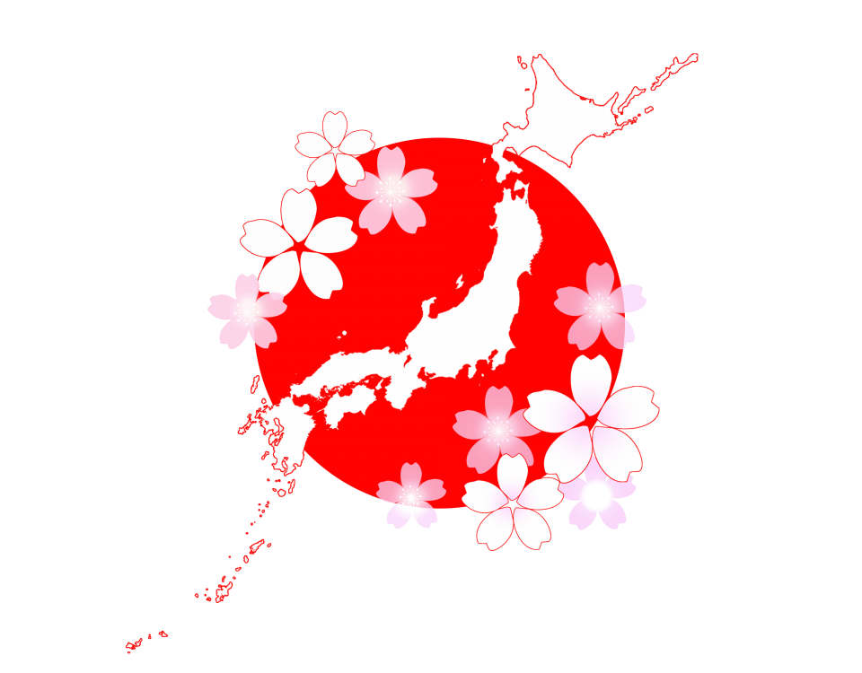

Le Japon, entre tradition et modernité : un voyage au cœur de l émerveillement
Le Japon, terre de contrastes et d harmonie, invite à une exploration fascinante.
Des ruelles traditionnelles de Kyoto aux néons vibrants de Tokyo, chaque coin révèle une facette unique de son histoire et de sa culture.
Plonge dans la sérénité des temples zen, savoure des mets délicats comme les sushis et les ramen, et émerveille-toi devant la beauté intemporelle des cerisiers en fleurs.
Entre montagnes sacrées, bains onsen relaxants et technologies futuristes,
le Japon promet une aventure à la fois spirituelle et sensorielle, où chaque instant devient une découverte.
Il y a aussi la culuture. La culture japonaise célèbre la beauté et l harmonie à travers des traditions uniques comme le hanami,
où l'on contemple les cerisiers en fleurs, et les matsuri, festivals animés de danses et processions.
Les arts comme l origami et la cérémonie du thé reflètent un profond respect pour l esthétique et la sérénité.
La Gastronomie Japonaise
Le Japon offre une expérience gastronomique variée et raffinée. Voici une sélection de cinq restaurants dans différentes régions du Japon,
où vous pourrez savourer des plats incontournables de la cuisine japonaise :
Passeport : Un passeport valide est nécessaire pour entrer au Japon. Assurez-vous qu'il est valide pendant toute la durée de votre séjour.
Visa : Un visa touristique n'est pas nécessaire pour les séjours de moins de 90 jours pour les ressortissants de plusieurs pays, y compris la France. Cependant, pour les séjours plus longs ou d'autres types de visa, vous devrez en faire la demande auprès de l'ambassade ou du consulat.
Billet retour : Il peut être demandé de prouver que vous avez un billet de retour ou de continuation de voyage.
Assurance voyage : Bien que non obligatoire, il est fortement recommandé de souscrire une assurance couvrant les frais médicaux et l'annulation de voyage.
 
